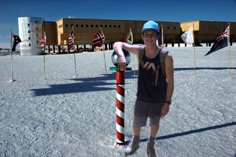

Who is Nick Vargas?
Origins
Raised by coyotes in the American southwest, Nick Vargas was forced to learn the art of self reliance at a young age. Nick went on to do well in school despite the fact that he had a full time job. It was a hard and dangerous life, working in the coal mines, but he had to do it. Learning numbers and colors by day and shoveling coal at night was tough on young Nick Vargas, but it built character. Many credit these tough early years with helping Nick develop the willpower and discipline that served him so well later in life. Most notably was when he trekked countless miles through the Andes Mountains in pursuit of Sasquatch, despite the difficulties in walking caused by his enormous penis.

Entrepreneur
Nick in the now iconic Be Vargas advertisment that helped launch his modeling career

Pioneer
Nick visits the South Pole in his ongoing hunt to find the anti-santa

Style Icon
Nick vargas after winning the CDFA's Mensware Designer of the year award for the 4th consecutive year (circa 1998)

Adventurer
An exhausted Nick emerges from the Panamanian jungle after spending six months searching for big foot (circa 1897)
Historian
Nick documenting the Hindenburg disaster